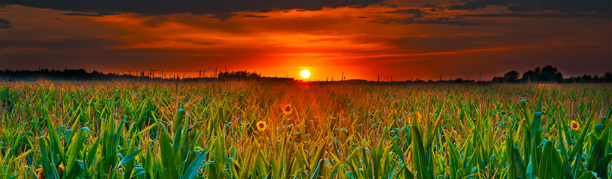

Ganado Vacuno
Carne de res producida sin ingeniería genética, uso de radiación ionizante o lodos de depuradora

Cultivamos verduras orgánicas y las traemos a las traemos a tu mesa
Lo que ofrecemos
Carne de res producida sin ingeniería genética, uso de radiación ionizante o lodos de depuradora

Los productos lácteos como la leche, el queso y el yogur contienen los nutrientes que su cuerpo necesita.

Cubre todo lo que necesita saber para cultivar y comercializar con éxito sus propias frutas orgánicas de huerta.